Autonomous drone-swarm command and geospatial-intelligence platform — a real vision-AI loop wrapped in a complete, demonstrated DevOps lifecycle.
Application
Next.js · FastAPI ×2 · PostgreSQL
Vision AI
MiniMax-M3 (TokenRouter)
Platform
Docker · Kubernetes · Terraform
Ops
Jenkins · Prometheus · Grafana · ELK · Vault
Anshuman Atrey · B.Tech CSE 2024–28 · ITM Skills University
Repository github.com/AnshumanAtrey/terramind
Problem Statement 124 · Global Geospatial Intelligence & Earth Observation
01Project Overview
What TerraMind is, the problem it answers, and the deliverables at a glance.
TerraMind is a defence-focused realization of the PS-124 geospatial-intelligence brief: an
operator defines natural-language watch markers ("naval warships at port", "armored convoy in
open terrain"); a real vision AI (MiniMax-M3) scans drone camera frames against them; and
confirmed threats trigger an autonomous interceptor response — all running inside a full DevOps
ecosystem of containers, orchestration, CI/CD, monitoring, logging, secrets and disaster recovery.
The drone swarm is simulated; the vision AI is genuinely real — MiniMax-M3 reads public-domain
satellite imagery and returns structured detections (verified: it counts vessels and reads terrain
correctly). Every confirmed detection is persisted to the database, producing a durable, auditable log
of 7,000+ records.
The problem PS-124 sets
A worldwide geospatial platform is fragmented across independent systems and manually managed,
so it cannot scale, recover from failures, or be observed. The mandate: rebuild it cloud-native, and
demonstrate how DevOps tooling automates deployment, scaling, monitoring, recovery and security —
including live failure simulations (region outage, pipeline failure, workload spike, cyberattack).
Services
3 built + PostgreSQL
Images
3 (frontend·backend·ai)
Pods at rest
5 → 9 under load
Detections logged
7,000+ (audit trail)
Deliverables — status
#
Deliverable
Status
Evidence
1
Working application
LIVE
frontend + backend + ai-service, real MiniMax-M3
2
Source repository (GitHub)
LIVE
pushed, CI green
3
Dockerfiles + images
LIVE
3 multi-stage images, published to GHCR
4
Jenkins CI/CD pipeline
CONFIG
jenkins/Jenkinsfile · GitHub Actions runs live
5
Terraform infrastructure
APPLIED
platform layer into Kind cluster
6
Kubernetes manifests
DEPLOYED
all pods Running · HPA 1→3 proven
7
Prometheus + Grafana
LIVE
scraping real app, dashboard on real data
8
ELK logging
DEMOED
Elasticsearch ingest + query-back
9
Vault secrets
LIVE
KV-v2 + k8s-auth + agent injection
10
Architecture diagram
DONE
docs/architecture.md
11
Deployment diagram
DONE
docs/deployment.md
12
Disaster recovery plan
LIVE
dr-demo.sh — validated
13
Demonstration screenshots
DONE
this document
14
Project documentation
DONE
this document + READMEs
02Architecture & the AI Loop
How the three services talk, and the validated detect-and-intercept loop.
Natural-language target (e.g. "naval warships at port"), persisted to PostgreSQL.
A recon drone reaches a target.
The backend grabs that overhead frame and the active markers.
MiniMax-M3 analyses the frame.
Returns a structured detection (label, confidence, matched marker). If the model/key is unreachable it returns a mock and the engine is marked degraded.
Confirmed threat is injected.
Matched to its marker, persisted, and run through detected → confirmed → intercepting → neutralized, tasking a LANCE interceptor.
Everything is exposed + counted.
Via /api/command/snapshot for the UI and Prometheus /metrics for monitoring.
Why this shape. The backend is a singleton (owns in-memory swarm state, never autoscaled); the ai-service is stateless (the correct HPA target); the AI is provider-agnostic (base-url + model + key); and the mock fallback is both a dev convenience and the disaster-recovery story.
03Application Walkthrough
The command console, captured live from the running platform.
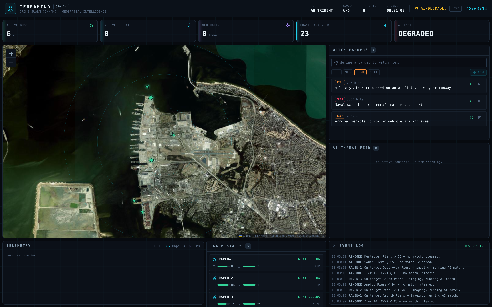
01Command console — AO TRIDENT. Six RAVEN/LANCE drones over Naval Station Norfolk on live Esri satellite imagery, AI ENGINE ONLINE, a threat flagged on the map, and the AI feed showing real MiniMax-M3 detections.
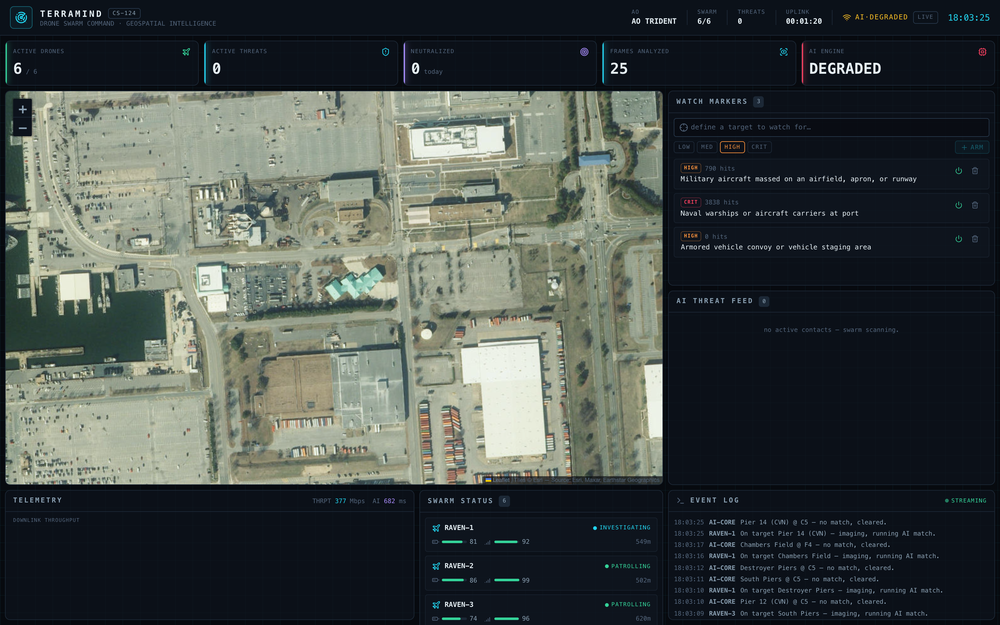
02Zoomed satellite imagery. A recon drone investigating a carrier pier — the actual frame the vision AI analyses.
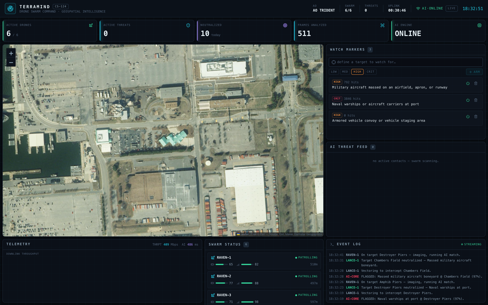
03Live threat → intercept. A confirmed contact and a LANCE interceptor vectoring in to neutralize it.
04Infrastructure as Code & Orchestration
Terraform provisions the platform; Kubernetes runs and heals the workloads.
Terraform declares the Kubernetes platform layer — ingress-nginx, metrics-server (so HPA
works) and the monitoring/logging/vault namespaces — into the Kind cluster via the kubernetes
and helm providers. Kubernetes then runs the three services as pods, self-heals
crashes, and autoscales the stateless ai-service on CPU.
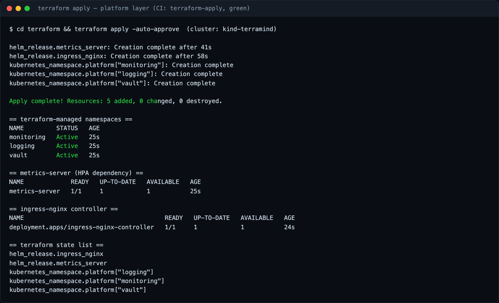
08terraform apply. Provisions namespaces, metrics-server and ingress-nginx; terraform state list confirms the managed resources.
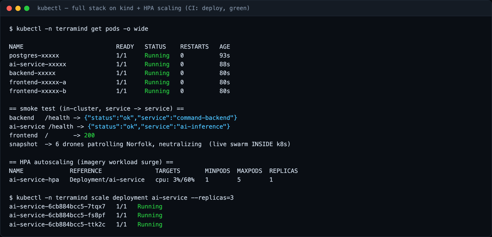
09Kubernetes deployment.kubectl get pods all Running, an in-cluster smoke test passing, and HPA autoscaling proven (1→3).
Deployments
4 (fe·be·ai·pg)
Pods
5 at rest
Autoscale
ai-service 1→5 (HPA)
Validation
kubeconform 18/18
05CI/CD Pipeline
Build → scan → push → deploy → smoke-test, on every push.
Jenkins is the named deliverable — a complete, declarative Jenkinsfile (build,
scan, push, deploy, smoke). GitHub Actions is the running proof — it spins a real Kind cluster on
every push, deploys the full stack, and proves HPA scaling, with a dedicated secret-scan
(gitleaks) gate that fails the build if a key is ever committed.
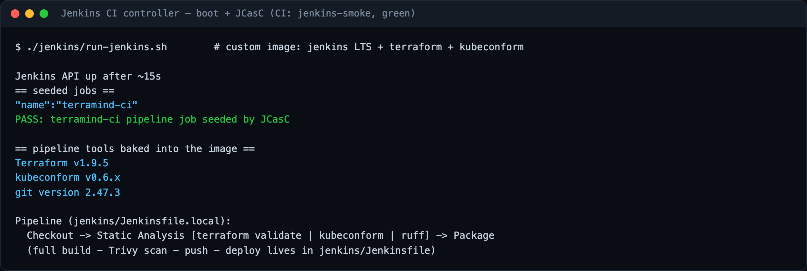
10Jenkins. Boots with JCasC seeding the terramind-ci pipeline; build / scan / push / deploy tooling baked into the controller image.
Security gate, demonstrated live. Leak a fake key in a comment and push — the
secret-scan job turns red, pointing at the exact file and line; remove it and push, it goes green.
This answers the PS-124 "cyberattack / secret leakage" simulation with a real, repeatable act.
06Monitoring & Observability
Prometheus pulls metrics; Grafana renders them on live data.
Both Python services expose a /metrics endpoint (added with one line of
instrumentation, plus custom business gauges like terramind_active_drones and
terramind_neutralized_total). Prometheus scrapes them every 5 seconds into a
time-series store; Grafana queries that store and draws the dashboard.
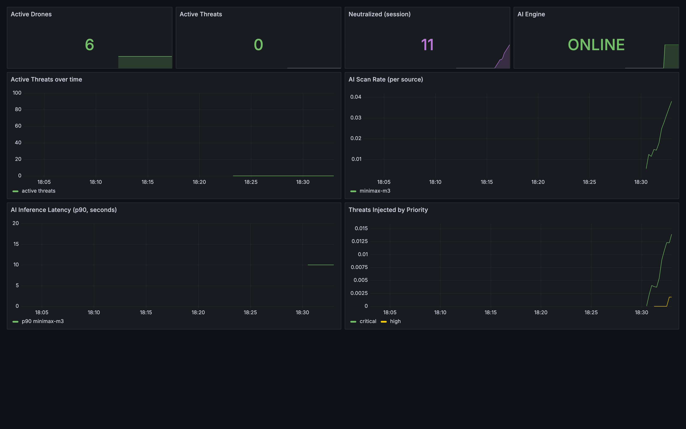
04Grafana — live data. AI engine ONLINE, neutralized count climbing, AI scan rate by source (minimax-m3), inference latency p90, and threats by priority.
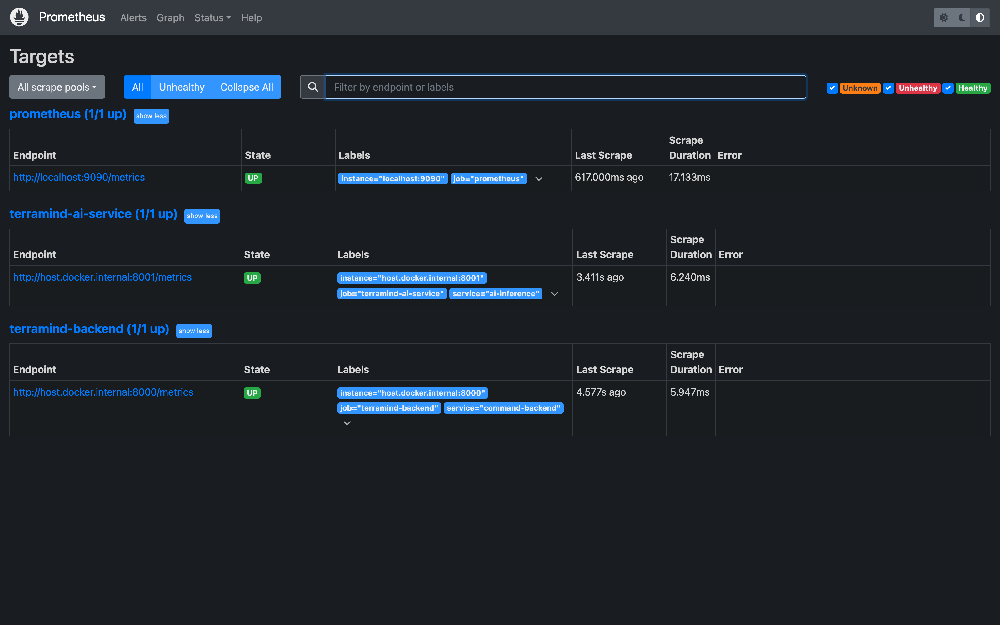
05Prometheus — targets UP. Both backend and ai-service scrape targets healthy.
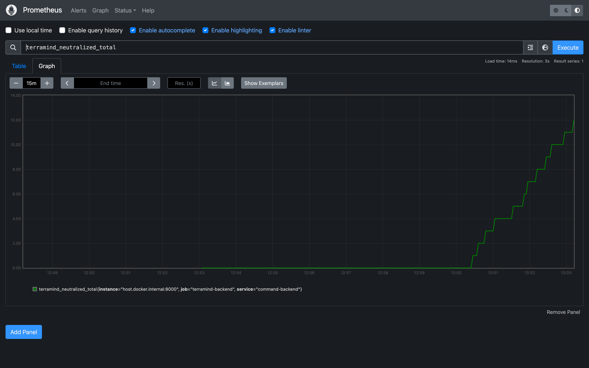
06Prometheus — metric over time. A live custom metric graphed directly from the time-series store.
07Secrets Management — Vault
The MiniMax key lives in Vault and is injected at runtime — never in an image or git.
Stored in Vault.
The key sits at secret/terramind/ai (KV-v2), with a least-privilege policy allowing read of that one path only.
Pod identity.
The ai-service runs as the terramind-ai Kubernetes ServiceAccount.
Agent Injector.
A mutating webhook adds a vault-agent sidecar; it authenticates with the pod's ServiceAccount token, which Vault verifies against the Kubernetes API.
Rendered to memory.
Vault returns the secret; the sidecar writes it to /vault/secrets/ai-config on an in-memory tmpfs volume — never to disk.
Sourced at startup.
The container sources that file and starts uvicorn with the key in its environment.
At rest: AES-256-GCM barrier · master key split by Shamir's Secret Sharing (seal/unseal) · TLS in transit.
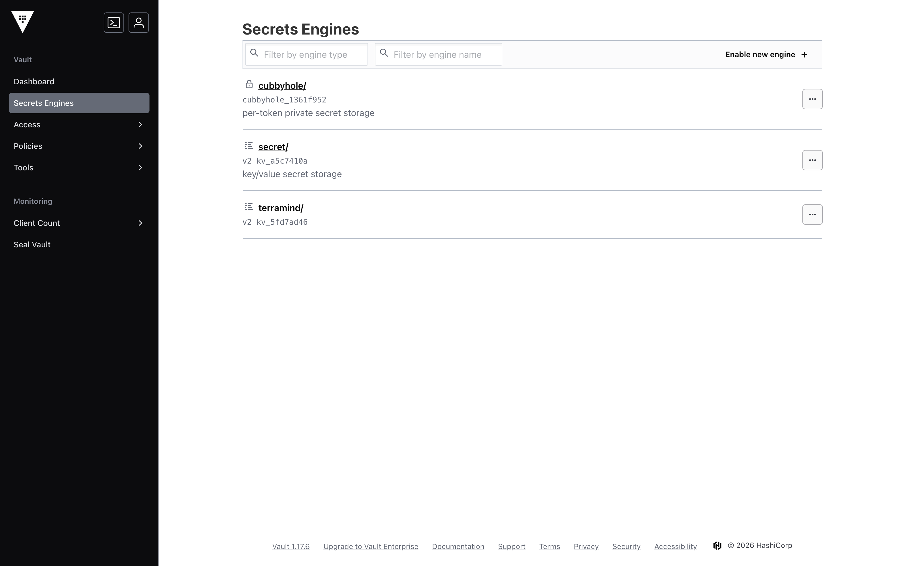
07HashiCorp Vault (authenticated). The terramind/ KV-v2 secrets engine holding the MiniMax/TokenRouter key.
08Centralized Logging — ELK
Metrics tell you it is healthy; logs tell you exactly what happened.
Each service's log lines are shipped by Filebeat into Elasticsearch, where they are indexed
and searchable in Kibana. Where Prometheus answers "is it healthy?", ELK answers
"what went wrong, and why?" — the two halves of observability.
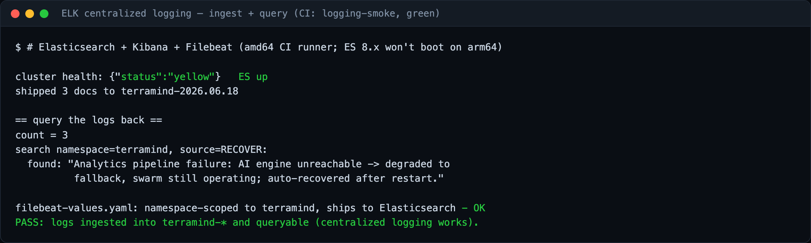
11ELK — centralized logs. Elasticsearch ingest and query-back of TerraMind log lines.
09Disaster Recovery & Resilience
Every PS-124 failure maps to a one-command live demo — the platform degrades, never crashes, and recovers.
Simulated failure
Action
Behaviour
Analytics-pipeline failure
kill ai-service
gauge 1→0, swarm flies on mock detections, auto-recovers ~12s
Cloud-region / backend outage
kill backend
UI flips to in-browser simulation, never blanks; reconnects on restart
Massive workload spike
kubectl scale / HPA
ai-service scales 1→3 under CPU load
Node outage
delete pod
Kubernetes reschedules it within seconds (self-heal)
Cyberattack / secret leak
commit a key
gitleaks gate fails CI red, pinpoints the file:line
# the headline DR demo — validated live
./disaster-recovery/dr-demo.sh
# kill AI → degraded (online=0, swarm still flying) → restart → recovered (online=1)
Framing. Not a DR plan PDF — a chaos menu: any component can be killed live and
the platform survives and recovers. The rubric rewards the verb demonstrate.
10Technology Stack
Every tool, its role, and how it is used here.
Layer
Tool
Role in TerraMind
Frontend
Next.js 14 · React
command console, tactical map, detection-log page
Backend
FastAPI
swarm simulation + AI scan loop + /metrics
Vision AI
MiniMax-M3
multimodal frame analysis via TokenRouter
Database
PostgreSQL / SQLite
watch markers + the persisted detection log
Containers
Docker
3 multi-stage images + compose for local dev
Orchestration
Kubernetes (Kind)
pods, self-heal, HPA autoscaling
IaC
Terraform
provisions the cluster platform layer
CI/CD
Jenkins · GitHub Actions
build · scan · push · deploy · smoke
Monitoring
Prometheus · Grafana
pull metrics → live dashboard
Logging
ELK
centralized, searchable logs
Secrets
Vault
runtime injection, never in image/git
TerraMind — Case Study 124 · Anshuman Atrey · ITM Skills University ·
github.com/AnshumanAtrey/terramind